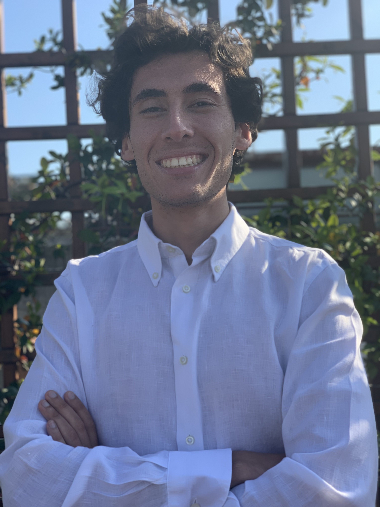

Bio
I was born on a rainy Tuesday in 1996 in Catania. I received my Bachelor's degree in Physics and Master's degree in Theoretical Physics from the University of Catania. I am currently pursuing my Ph.D. in Network and Data Science at Central European University.
Research
- Research interests in higher-order networks
- Research interests in topological data analysis
- Research interests in dynamics on networks
- Research interests in topological neuroscience
Education
- Bachelor's degree in Physics from University of Catania (2018)
- Master's degree in Theoretical Physics from University of Catania (2020)
Teaching
As a teacher, my philosophy is centered around empowering students to understand and engage with the material in a meaningful way. I believe that teaching is a process of guiding and facilitating understanding, rather than simply transmitting knowledge. To achieve this, I strive to connect with my students on a personal level, understand their unique needs and difficulties, and be flexible in my approach. I firmly believe in the importance of using alternative teaching methods to activate multiple cognitive spheres during the learning process. I incorporate elements of fun, dialogue, group projects and other interactive strategies to encourage active learning, rather than passive absorption of information. In particular, I specialize in making math accessible to non-math majors by introducing the beauty of math in a simple and relatable way. My ultimate goal is to inspire and empower students to become lifelong learners and critical thinkers.
- Tutor for Math and Physics courses at the Department of Biology and Natural Sciences at University of Catania (2019-2020)
- Teaching Assistant for Introduction to Mathematics at Central European University (2021) for QSS and PPE departments
- Teaching Assistant for Dynamical Systems on Networks for PhD in Network and Datascience (2022)
Conferences
- Presented research on "Temporal percolation and topological properties of higher-order networks" at CCS (2022)
Papers
- Chowdhary, Sandeep, et al. "Temporal patterns of reciprocity in communication networks." arXiv preprint arXiv:2207.03910 (2022)
- Di Bona, Gabriele, et al. "Maximal dispersion of adaptive random walks." arXiv preprint arXiv:2202.13923 (2022)